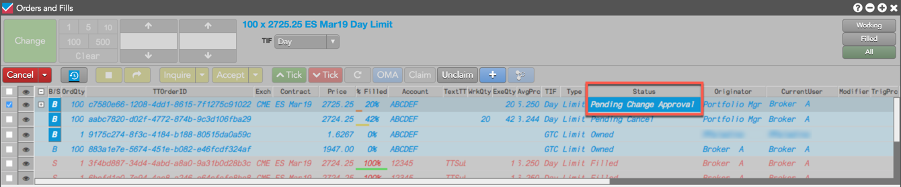
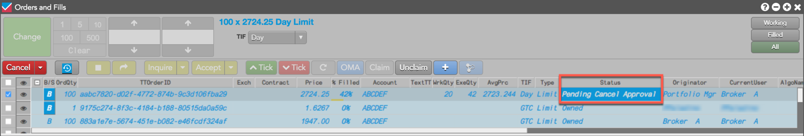

Based on their role in submitting or managing the order, users can make requests to change a care order or cancel a care order.
After the care order is claimed and has not been fully filled, the originator can request a change to the price or quantity.
To change a care order:
If you are the originator and not the owner, the Status column shows Pending Change Approval.

Both the originator and the owner will see Pending Change Approval in the Status column of their Order Books.
The owner can cancel the care order before submitting any child orders.
If the originator attempts to cancel the care order after it is claimed by the owner, then the owner must approve the cancel request. Both the originator and the owner will see Pending Cancel Approval in the Status column of their Order Books, indicating that there is a care order cancel request pending approval by the owner.
To cancel a care order:
If you are the originator and not the owner, the care order Status changes to Pending Cancel Approval. Otherwise, "Pending Cancel" is displayed.
